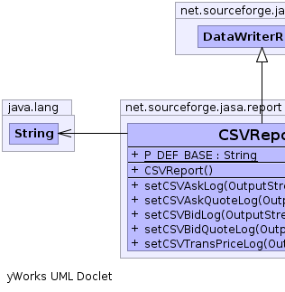
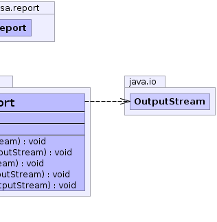

net.sourceforge.jasa.report.AbstractAuctionReport
net.sourceforge.jasa.report.DataWriterReport
net.sourceforge.jasa.report.CSVReport
net.sourceforge.jasa.report.AbstractAuctionReport
net.sourceforge.jasa.report.DataWriterReport
net.sourceforge.jasa.report.CSVReport
|
|||||||||
| PREV CLASS NEXT CLASS | FRAMES NO FRAMES | ||||||||
| SUMMARY: NESTED | FIELD | CONSTR | METHOD | DETAIL: FIELD | CONSTR | METHOD | ||||||||
java.lang.Object
public class CSVReport
A historicalDataReport that records data in CSV (comma-separated values) files.
Parameters
| base.quotelogfile string |
(the filename to store the quote data) |
| base.shoutlogfile string |
(the filename to store the shout data) |
| base.translogfile string |
(the filename to store the transaction price data) |
|  |  |
| Field Summary | |
|---|---|
static java.lang.String |
P_DEF_BASE
Deprecated. |
| Fields inherited from class net.sourceforge.jasa.report.DataWriterReport |
|---|
askLog, askQuoteLog, bidLog, bidQuoteLog, transPriceLog |
| Fields inherited from class net.sourceforge.jasa.report.AbstractAuctionReport |
|---|
auction |
| Constructor Summary | |
|---|---|
CSVReport()
Deprecated. |
|
| Method Summary | |
|---|---|
void |
setCSVAskLog(java.io.OutputStream stream)
Deprecated. Assign an output stream for logging shouts in comma-separated variable (CSV) format. |
void |
setCSVAskQuoteLog(java.io.OutputStream stream)
Deprecated. Assign an output stream for logging market quote data in comma-separated variable (CSV) format. |
void |
setCSVBidLog(java.io.OutputStream stream)
Deprecated. |
void |
setCSVBidQuoteLog(java.io.OutputStream stream)
Deprecated. Assign an output stream for logging market quote data in comma-separated variable (CSV) format. |
void |
setCSVTransPriceLog(java.io.OutputStream stream)
Deprecated. Assign an output stream for logging transaction price data in CSV format. |
| Methods inherited from class net.sourceforge.jasa.report.DataWriterReport |
|---|
dataUpdated, eventOccurred, produceUserOutput, reset, updateQuoteLog, updateShoutLog, updateTransPriceLog |
| Methods inherited from class net.sourceforge.jasa.report.AbstractAuctionReport |
|---|
getAuction, getName, getVariableBindings, setAuction |
| Methods inherited from class java.lang.Object |
|---|
clone, equals, finalize, getClass, hashCode, notify, notifyAll, toString, wait, wait, wait |
| Field Detail |
|---|
public static final java.lang.String P_DEF_BASE
| Constructor Detail |
|---|
public CSVReport()
| Method Detail |
|---|
public void setCSVAskQuoteLog(java.io.OutputStream stream)
public void setCSVBidQuoteLog(java.io.OutputStream stream)
public void setCSVAskLog(java.io.OutputStream stream)
public void setCSVBidLog(java.io.OutputStream stream)
public void setCSVTransPriceLog(java.io.OutputStream stream)
|
|||||||||
| PREV CLASS NEXT CLASS | FRAMES NO FRAMES | ||||||||
| SUMMARY: NESTED | FIELD | CONSTR | METHOD | DETAIL: FIELD | CONSTR | METHOD | ||||||||